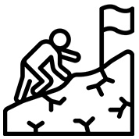

home > 인재채용 > 인재상
인재상
글로벌 1위, 삼성디스플레이와 함께 할 인재를 기다립니다.
삼성디스플레이는 창의적이고 도전적이며 차별화 된 경쟁력을 갖춘 전문인재와 함께합니다.
- 
-
- 창의적 인재
- 기존의 형식에서 벗어나 새로운 생각을 가지고 발상과 인식의 전환을 이끌어 낼 수 있는 창의적인인재, 목표의식과 위기의식을 갖고 끊임없는 창의적인 개선을 통해 위기를 극복해 나갈 수 있는 인재. 바로 삼성디스플레이가 바라는 인재입니다.
-
- 글로벌 인재
- 한국을 넘어 세계로, 글로벌 초일류 기업을 향하여 나가는 삼성디스플레이와 함께할 인재, 뛰어난 외국어 실력과 다양한 문화에 쉽게 적응할 수 있는 인재. 바로 삼성디스플레이가 꿈꾸는 인재입니다.
-
- 도전적 인재
- 어렵고 남들이 기피하는 분야에도 도전하는 개척정신과 변화의 개혁을 선도하려는 강한 모험정신을 가진 인재, 실패를 두려워 하지않는 인재. 바로 삼성디스플레이가 원하는 인재입니다.
-
- 전문성 인재
- 한 분야의 전문 지식을 기반으로 다양한 분야의 지식을 창출할 수 있는 인재, 이러한 전문성을 통하여 고객의 Needs를 파악해 끊임없이 기술과 시장의 영역을 넓혀가는 인재. 바로 삼성디스플레이가 꿈꾸는 인재입니다.